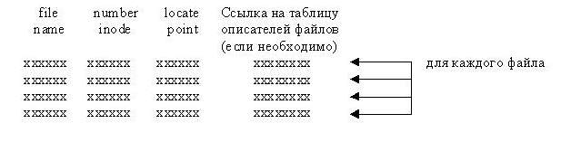
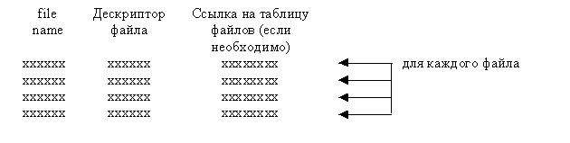

Структура системы управления вводом-выводом в ОС UNIX
Ознакомиться с системой управления вводом-выводом в ОС UNIX и основными структурами данных, используемыми этой системой.
Исследовать механизм работы системы управления вводом-выводом.
-
Изучить систему управления вводом-выводом ОС UNIX.
-
Изучить структуры данных, используемые этой системой.
-
Ознакомиться с заданием к лабораторной работе.
-
Для указанного варианта разработать программу, моделирующую работу системы управления вводом-выводом ОС UNIX по ведению
структур (таблиц), отслеживающих операции ввода-вывода в системе.
-
Отладить и оттестировать составленную программу, используя инструментарий ОС UNIX.
-
Защитить лабораторную работу, ответив на контрольные вопросы.
Основным назначением системы управления вводом-выводом ОС UNIX является создание интерфейса между программой и внешним
устройством компьютера. Поскольку любая операция ввода-вывода осуществляется как операция ввода-вывода в файл, то
логическая структура программного интерфейса, реализуемого системой управления вводом-выводом, не зависит ни от типа
данных, ни от типа внешнего устройства компьютера.
При осуществлении операций ввода-вывода в файл, специфицированный пользовательским дескриптором файла, ОС UNIX ставит
в соответствие используемому системному вызову последовательность программных запросов к аппаратуре компьютера с помощью
целого ряда связанных наборов данных, структура которых поддерживается самой ОС UNIX, ее файловой системой и системой
управления вводом-выводом. Основным из упомянутых наборов можно считать таблицу описателей файлов.
Таблица описателей файлов представляет собой хранящуюся в оперативной памяти компьютера структуру данных, элементами
которой являются копии описателей файлов, по одной на каждый файл ОС UNIX, к которому была осуществлена попытка доступа.
При выполнении операции открытия файла в ОС UNIX сначала по полному имени файла определяется элемент каталога, где в поле
имени содержится имя файла, для которого производится операция открытия файла. В найденном элементе каталога из поля ссылки
извлекается порядковый номер описателя файла. Затем описатель файла с соответствующим номером копируется в оперативную
память, в ее область, называемую таблицей описателей файлов (если он до этого там отсутствовал).
С таблицей описателей файлов тесно связана другая структура данных, называемая таблицей файлов. Каждый элемент таблицы
файлов содержит информацию о режиме открытия файла, специфицированным при открытии файла, а также информацию о положении
указателя чтения-записи. При каждом открытии файла в таблице файлов появляется новый элемент.
Один и тот же файл ОС UNIX может быть открыт несколькими не связанными друг с другом процессами, при этом ему будет
соответствовать один элемент таблицы описателей файлов и столько элементов таблицы файлов, сколько раз этот файл был
открыт. Однако из этого правила есть одно исключение: оно касается случая, когда файл, открытый процессом, потом
открывается процессом-потомком, порожденным с помощью системного вызова fork(). При возникновении такой ситуации
операции открытия файла, осуществленной процессом-потомком, будет поставлен в соответствие тот из существующих
элементов таблицы файлов (в том числе положение указателя чтения-записи), который в свое время был поставлен в
соответствие операции открытия этого файла, осуществленной процессом-предком.
Третий набор данных называется таблицей открытых файлов процесса. Каждому процессу в ОС UNIX сразу после порождения
ставится в соответствие таблица открытых файлов процесса. Если, в свою очередь, указанный процесс порождает новый
процесс, например, с помощью системного вызова fork(), то процессу-потомку ставится в соответствие таблица открытых
файлов процесса, которая в первый момент функционирования процесса-потомка представляет собой копию таблицы открытых
файлов процесса-предка.
В результате каждый элемент таблицы открытых файлов процесса содержит указатель местоположения соответствующего элемента
таблицы файлов, которая в свою очередь, содержит ссылку на элемент таблицы описателей файла. Если пользовательский
дескриптор файла использовать для индексации элементов таблицы открытых файлов процесса, то получим логическую схему
системы управления файлами (вводом-выводом).
Лабораторная работа предполагает написание программы, показывающей действия системы управления вводом-выводом при выполнении
некоторых действий с файлами. Программа должна демонстрировать динамику формирования таблиц и их изменений в процессе
указанных в варианте задания событий.
При этом при выполнении тех заданий, где требуется демонстрировать создание таблиц описателей файлов, информацию о файле
необходимо получать с помощью системных вызовов stat (fstat), поскольку
именно информация, хранящаяся в описателе файла, в основном и помещается системным вызовом stat
(fstat) в структуру, специфицированную его вторым выходным параметром.
Полученную информацию из структуры stat, дополненную именем файла и следует в лабораторных работах
трактовать в качестве таблицы описателей файлов.
В тех заданиях, где требуется отслеживать динамику создания и модификации таблиц файлов и таблиц открытых файлов процесса,
эти таблицы должны программно моделироваться при возникновении событий, указанных в заданиях лабораторной работы. Никаких
действий по созданию процессов в программах выполнять не требуется.
Структура таблицы файлов в программах лабораторной работы (упрощенный вариант) должна иметь вид:

Структура таблицы открытых файлов в программах должна иметь вид:

-
Процесс открывает N файлов, реально существующих на диске либо вновь созданных. Разработать программу, демонстрирующую
динамику формирования таблицы описателей файлов и изменения информации в ее элементах (при изменении информации в файлах).
Например, сценарий программы может быть следующим:
-
открытие первого пользовательского файла;
-
открытие второго пользовательского файла;
-
открытие третьего пользовательского файла;
-
изменение размера третьего файла до нулевой длины;
-
копирование второго файла в третий файл.
После каждого из этапов печатается таблица описателей файлов для всех открытых файлов.
-
Процесс создал новый файл и переназначил на него стандартный вывод. Разработайте программу, демонстрирующую динамику
создания таблиц, связанных с этим событием (таблица файлов, таблица открытых файлов процесса). Например, сценарий
программы может быть следующим:
-
неявное открытие стандартного файла ввода;
-
неявное открытие стандартного файла вывода;
-
неявное открытие стандартного файла вывода ошибок;
-
открытие пользовательского файла;
-
закрытие стандартного файла ввода (моделирование close(0));
-
получение копии дескриптора пользовательского файла (моделирование dup(fd), где fd - дескриптор пользовательского файла);
-
закрытие пользовательского файла (моделирование close(fd), где fd - дескриптор пользовательского файла).
После каждого из этапов печатаются таблица описателей файлов, таблица файлов, таблица открытых файлов процессов.
-
Пусть два процесса осуществляют доступ к одному и тому же файлу, но один из них читает файл, а другой пишет в него. Наступает
момент, когда оба процесса обращаются к одному и тому же блоку диска. Пусть некоторая гипотетическая ОС использует ту же
механику управления вводом-выводом, что и ОС UNIX, но не позволяет, как в ситуации, описанной выше, обращаться к одному блоку
файла. Разработайте программу, которая демонстрирует "замораживание" перемещения указателя чтения-записи одного из процессов
до тех пор, пока указатель второго процесса находится в этом блоке. Показать динамику создания всех таблиц, связанных с файлами
и процессами, и изменение их содержимого.
После каждого из этапов печатаются таблицы файлов и открытых файлов обоими процессами.
-
Пусть N процессов осуществляют доступ к одному и тому же файлу на диске (но с разными режимами доступа). Разработать
программу, демонстрирующую динамику формирования таблицы файлов и изменения ее элементов (при перемещении указателей
чтения-записи, например). Например, сценарий программы может быть следующим:
-
открытие файла процессом 0 для чтения;
-
открытие файла процессом 1 для записи;
-
открытие файла процессом 2 для добавления;
-
чтение указанного числа байт файла процессом 0;
-
запись указанного числа байт в файл процессом 1;
-
добавление указанного числа байт в файл процессом 2.
После каждого из этапов печатаются таблицы файлов всех процессов.
-
Разработайте программу, демонстрирующую работу ОС UNIX при открытии файла процессом и чтении-записи в него. При этом достаточно показать только
динамику создания таблиц, связанных с этим событием (таблица описателей файла, таблица файлов, таблица открытых файлов
процесса). Например, сценарий программы может быть следующим:
-
неявное открытие стандартного файла ввода;
-
неявное открытие стандартного файла вывода;
-
неявное открытие стандартного файла вывода ошибок;
-
открытие первого пользовательского файла;
-
открытие второго пользовательского файла;
-
запись 20 байт в первый файл;
-
чтение 15 байт из второго файла;
-
запись 45 байт в первый файл.
После каждого из этапов печатаются таблица описателей файлов, таблица файлов, таблица открытых файлов процессов.
-
Разработайте программу, демонстрирующую работу ОС UNIX при открытии файла процессом. При этом достаточно показать только
динамику создания таблиц, связанных с этим событием (таблица описателей файла, таблица файлов, таблица открытых файлов
процесса). Например, сценарий программы может быть следующим:
-
неявное открытие стандартного файла ввода;
-
неявное открытие стандартного файла вывода;
-
неявное открытие стандартного файла вывода ошибок;
-
открытие первого пользовательского файла;
-
открытие второго пользовательского файла;
-
открытие третьего пользовательского файла.
После каждого из этапов печатаются таблица описателей файлов, таблица файлов, таблица открытых файлов процессов.
-
Пусть каждый из N процессов осуществляет доступ к Pi файлам (i=1..N). Далее пусть M<N процессов породили процессы-потомки
(с помощью системного вызова fork()) и среди этих потомков K<M процессов дополнительно открыли еще Sj файлов (j=1..K).
Разработать программу, демонстрирующую динамику формирования таблиц открытых файлов процессов. Например, сценарий
программы может быть следующим:
-
процесс 0 открывает два файла (общее число открытых файлов, включая стандартные файлы, равно пяти);
-
процесс 1 открывает два файла (общее число открытых файлов, включая стандартные файлы, равно пяти);
-
процесс 2 открывает два файла (общее число открытых файлов, включая стандартные файлы, равно пяти);
-
процесс 0 порождает процесс 3, который наследует таблицу открытых файлов процесса 0;
-
процесс 1 порождает процесс 4, который наследует таблицу открытых файлов процесса 1;
-
процесс 4 дополнительно открыл ещё два файла.
После каждого из этапов печатаются таблицы открытых файлов процессов, участвующих в данном этапе.
-
Процесс создал новый файл и переназначил на него стандартный ввод. Разработайте программу, демонстрирующую динамику
создания таблиц, связанных с этим событием (таблица описателей файла, таблица файлов, таблица открытых файлов процесса). Например, сценарий
программы может быть следующим:
-
неявное открытие стандартного файла ввода;
-
неявное открытие стандартного файла вывода;
-
неявное открытие стандартного файла вывода ошибок;
-
чтение из стандартного файла ввода 5 байт;
-
открытие пользовательского файла;
-
закрытие стандартного файла ввода (моделирование close(0));
-
получение копии дескриптора пользовательского файла (моделирование dup(fd), где fd - дескриптор пользовательского файла);
-
закрытие пользовательского файла (моделирование close(fd), где fd - дескриптор пользовательского файла);
-
чтение из "стандартного" файла ввода 10 байт.
После каждого из этапов печатаются таблица описателей файлов, таблица файлов, таблица открытых файлов процессов.
-
Пусть процесс, открывший N файлов, перед порождением процесса-потомка с помощью системного вызова fork()
закрывает K<N файлов. Процесс-потомок сразу после порождения закрывает M<N-K файлов и через некоторое время завершается
(в это время процесс-предок ожидает его завершения). Разработайте программу, демонстрирующую динамику изменения данных в системе
управления вводом-выводом ОС UNIX (таблицы файлов и таблицы открытых файлов процессов). Например, сценарий программы может быть
следующим:
-
открытие процессом-предком стандартных файлов ввода-вывода и четырёх пользовательских файлов для чтения;
-
закрытие процессом-предком двух пользовательских файлов;
-
процесс-предок порождает процесс, который наследует таблицы файлов и открытых файлов процесса-предка;
-
завершается процесс-потомок.
После каждого из этапов печатаются таблицы файлов и открытых файлов для обоих процессов.
-
Пусть процесс осуществляет действия в соответствии со следующим фрагментом программы:
main()
{
...
fd=creat(temporary, mode); /* открыть временный файл */
...
/* выполнение операций записи-чтения */
...
close(fd);
}
Разработайте программу, демонстрирующую динамику изменения данных системы управления вводом-выводом ОС UNIX (таблица описателей
файлов, таблица файлов, таблица открытых файлов процесса).
-
Какова структура описателей файлов, таблицы файлов, таблицы открытых файлов процесса?
-
Какова цепочка соответствия дескриптора файла, открытого процессом, и файлом на диске?
-
Опишите функциональную структуру операции ввода-вывода (пулы, ассоциация их с драйверами, способы передачи информации и т.д.).
-
Каким образом осуществляется поддержка устройств ввода-вывода в ОС UNIX?
-
Какова структура таблиц открытых файлов, файлов и описателей файлов после открытия файла?
-
Какова структура таблиц открытых файлов, файлов и описателей файлов после закрытия файла?
-
Какова структура таблиц открытых файлов, файлов и описателей файлов после создания канала?
-
Какова структура таблиц открытых файлов, файлов и описателей файлов после создания нового процесса?